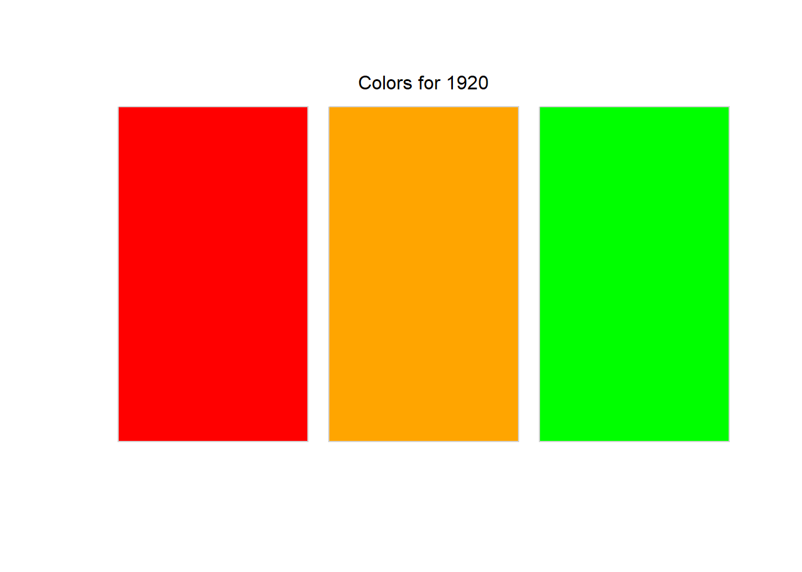
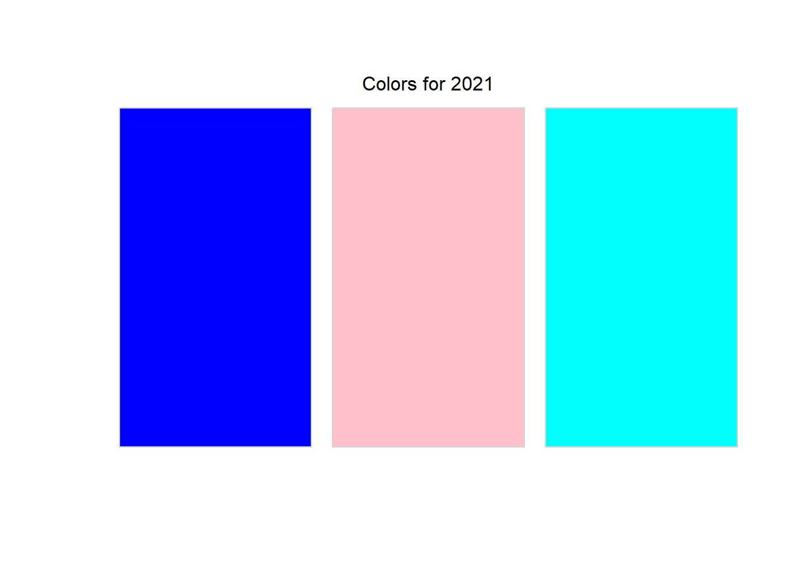

| Assignments | Points | Percent |
|---|---|---|
| Labs (x3) | 60 | 30% |
| Midterm | 70 | 35% |
| Final | 70 | 35% |
| Total | 200 |
Functional Programming for Educational Data Science
EDLD 653
Introduction &
Data Types
Week 1
Agenda
- Introductions
- Syllabus
- Intro to data types
. . .
Learning Objectives
- Understand the requirements of the course
- Understand the fundamental difference between lists and atomic vectors
- Understand how atomic vectors are coerced, implicitly or explicitly
- Understand various ways to subset vectors, and how subsetting differs for lists
- Understand attributes and how to set/modify
About me
- husband, dad
- BA: UC Santa Barbara
- PhD, School Psychology: University of Maryland
- UO since 2009 at Behavioral Research & Teaching (BRT)
- Research Professor
Research
- Applied statistical methods used by researchers
- Developing and improving systems that support data-based decision making using advanced technologies to influence teachers’ instructional practices and increase student achievement
Teaching
- EDLD 651 - Introduction to Data Science with
R - EDLD 653 - this one!
- EDLD 654 - Applied Machine Learning for Educational Data Scientists
- EDLD 609 - Data Science Capstone
Introduce yourself!
We mostly know each other, but it’s always good to hear from each other
- Name and program of study
- How and how often are you using
Rthese days?
This course
… is new to me
Syllabus
Course Learning Outcomes
- Understand and be able to describe the differences in
R’s data structures (including the four main vector types, data frames, and lists) and when each is most appropriate for a given task - Explore
purrr::map()and its variants, how they relate to baseRfunctions, and why the{purrr}variants are often preferable - Work with lists and list columns using
purrr::nest()andpurrr:unnest() - Convert repetitive tasks into functions
- Understand elements of good functions, and things to avoid
- Write effective and clear functions to continue with the mantra of “don’t repeat yourself”
Course Website
Required Textbooks (free)

Other books (also free)


Course Sequence
- Data types
- Base
Riterations {purrr}- Batch processes and working with list columns
- Parallel iterations (and a few extras)
- Writing functions
- Shiny
Assignments
Grading Components
| Lower % | Lower point range | Grade | Upper point range | Upper % |
|---|---|---|---|---|
| 97 | 194 or more | A+ | ||
| 93 | 186 | A | 192 | 96 |
| 90 | 180 | A- | 184 | 92 |
| 87 | 174 | B+ | 178 | 89 |
| 83 | 166 | B | 172 | 86 |
| 80 | 160 | B- | 164 | 82 |
| 77 | 154 | C+ | 158 | 79 |
| 73 | 146 | C | 152 | 76 |
| 70 | 140 | C- | 144 | 72 |
| F | 138 or less | 69 |
Labs
Please try to be in-class on Lab days, it helps me help you
| Assigned | Date Assigned | Date Due | Points | Percent |
|---|---|---|---|---|
| Lab 1 | Apr-06 | Apr-13 | 20 | 10% |
| Lab 2 | Apr-13 | Apr-20 | 20 | 10% |
| Lab 3 | May-11 | May-18 | 20 | 10% |
- Scored on a “best honest effort” basis
- Contact me for help rather than submitting incomplete work
- If the assignment is not complete, and you have not contacted me for help, it is likely to result in partial credit or zero score
- You can work in groups on these
- Late: 10 points max
- >1 week late: 0 points
Midterm
- Take-home Midterm test
- Write loops to solve problems
- Scored on a correct/incorrect basis
- Worth 70 points (35% of your grade)
Final Exam
- Take-home Final exam
- Anything covered in this course is fair game
- Scored on a correct/incorrect basis
- Worth 70 points (35% of your grade)
Feedback
- I will give you feedback on the midterm and the final
- Labs scored on a completion basis
- We will go over everything in class
GenAI Use
- Best use of GenAI might be for coding!
- Use to help with coursework and assignments
- code checking
- code generation
- code explanation
- If you include any content generated GenAI, you must cite it
- The same way that you must cite any content you use from other sources, such as books, articles, videos, the internet, etc.
- See example in syllabus
The code was generated by ChatGPT 4.5. See the link for a copy of the prompt. https://chatgpt.com/share/somerandomestringoftext
Break?
Basic Data Types
Vectors
4 basic types1
- Integer (numeric, whole number)
- Double (numeric, decimal)
- Logical
- Character
Creating vectors
Vectors are created with c()
Below are examples of each of the four main types of vectors
Coercion
- Vectors must be of the same type
- If you try to mix types, implicit coercion will occur
- Implicit coercion defaults to the most flexible type
- which is… ?
. . .
c(7L, 3.25)[1] 7.00 3.25. . .
c(3.24, TRUE, "April")[1] "3.24" "TRUE" "April". . .
c(TRUE, 5)[1] 1 5Explicit coercion
You can alternatively define the coercion to occur
as.integer(c(7L, 3.25))[1] 7 3. . .
as.logical(c(3.24, TRUE, "April"))[1] NA TRUE NA. . .
as.character(c(TRUE, 5)) # still maybe a bit unexpected?[1] "1" "5"Coercing to logical
as.logical(c(0, 1, 1, 0))[1] FALSE TRUE TRUE FALSE. . .
Any number that is not zero gets coerced to TRUE
as.logical(c(0, 5L, 7.4, -1.6, 0))[1] FALSE TRUE TRUE TRUE FALSE. . .
as.logical(c(3.24, TRUE, "April"))[1] NA TRUE NAWait…why the NAs here?
Review
Discuss in small breakout groups
- What are the four basic types of atomic vectors?
- What function creates a vector?
- What does coercion mean, and when does it come into play?
- True/False: An
Rlist is not a vector.
Checking types
Use typeof to verify the type of vector
typeof(c(7L, 3.25))[1] "double"typeof(as.integer(c(7L, 3.25)))[1] "integer"Piping
Although traditionally used within the {tidyverse}, it can still be useful
The following are equivalent
typeof(as.integer(c(7L, 3.25)))[1] "integer"c(7L, 3.25) |>
as.integer() |>
typeof()[1] "integer"Pop quiz
Without actually running the code, predict which type each of the following will coerce to.
c(1.25, TRUE, 4L)
c(1L, FALSE)
c(7L, 6.23, "eight")
c(TRUE, 1L, 0L, "False")Answers
typeof(c(1.25, TRUE, 4L))[1] "double". . .
typeof(c(1L, FALSE))[1] "integer". . .
typeof(c(7L, 6.23, "eight"))[1] "character". . .
typeof(c(TRUE, 1L, 0L, "False"))[1] "character"Lists
Lists are vectors, but not atomic vectors
Fundamental difference - each element can be a different type
. . .
list("a", 7L, 3.25, TRUE)[[1]]
[1] "a"
[[2]]
[1] 7
[[3]]
[1] 3.25
[[4]]
[1] TRUELists
- Each element of the list is another vector, possibly atomic, possibly not
- The prior example included all scalar vectors
- vector that contains only a single value
- Lists do not require all elements to be the same length
list(
c("a", "b", "c"),
rnorm(5),
c(7L, 2L),
c(TRUE, TRUE, FALSE, TRUE)
)[[1]]
[1] "a" "b" "c"
[[2]]
[1] -0.86378205 -0.01866145 -1.78322803 0.89500207 0.35757039
[[3]]
[1] 7 2
[[4]]
[1] TRUE TRUE FALSE TRUESummary
- Atomic vectors must all be the same type
- implicit coercion occurs if not (and you haven’t specified the coercion explicitly)
- Lists are also vectors, but not atomic vectors
- Each element can be of a different type and length
- Incredibly flexible, but often a little more difficult to get the hang of
Challenge
Work with a partner
One of you share your screen:
- Create four atomic vectors, one for each of the fundamental types
- integer, double, logical, character
- Combine two or more of the vectors. Predict the implicit coercion of each
- Apply explicit coercions, and predict the output for each
(basically quiz each other)
Attributes
Attributes
- Q: What are attributes?
- A: metadata
- Q: What’s metadata?
- A: Data about the data
- Attributes
- named list of arbitrary metadata
Other data types
Atomic vectors by themselves make up only a small fraction of the total number of data types in R
. . .
Other data types
- Data frames
- Matrices & arrays
- Factors
- Dates
. . .
Remember, atomic vectors are the atoms of R. Many other data structures are built from atomic vectors.
We use attributes to create other data types from atomic vectors.
Attributes
Common
- Names
- Dimensions
Less common
- Arbitrary metadata
Examples
Please follow along!
library(palmerpenguins)
penguins# A tibble: 344 × 8
species island bill_length_mm bill_depth_mm flipper_length_mm body_mass_g
<fct> <fct> <dbl> <dbl> <int> <int>
1 Adelie Torgersen 39.1 18.7 181 3750
2 Adelie Torgersen 39.5 17.4 186 3800
3 Adelie Torgersen 40.3 18 195 3250
4 Adelie Torgersen NA NA NA NA
5 Adelie Torgersen 36.7 19.3 193 3450
6 Adelie Torgersen 39.3 20.6 190 3650
7 Adelie Torgersen 38.9 17.8 181 3625
8 Adelie Torgersen 39.2 19.6 195 4675
9 Adelie Torgersen 34.1 18.1 193 3475
10 Adelie Torgersen 42 20.2 190 4250
# ℹ 334 more rows
# ℹ 2 more variables: sex <fct>, year <int>attributes()
Please follow along!
attributes(): see all attributes associated with an object
attributes(penguins[1:20, ]) # limiting rows just for slides$names
[1] "species" "island" "bill_length_mm"
[4] "bill_depth_mm" "flipper_length_mm" "body_mass_g"
[7] "sex" "year"
$row.names
[1] 1 2 3 4 5 6 7 8 9 10 11 12 13 14 15 16 17 18 19 20
$class
[1] "tbl_df" "tbl" "data.frame"attr()
Access a single attribute by naming it within attr()
attr(penguins, "class")[1] "tbl_df" "tbl" "data.frame"attr(penguins, "names")[1] "species" "island" "bill_length_mm"
[4] "bill_depth_mm" "flipper_length_mm" "body_mass_g"
[7] "sex" "year" . . .
Note - this is not generally how you would pull these attributes. Rather, you would use class() and names()
Be specific
Note in the prior slides, I’m asking for attributes on the entire data frame
But the individual vectors may have attributes as well
. . .
attributes(penguins$species)$levels
[1] "Adelie" "Chinstrap" "Gentoo"
$class
[1] "factor"attributes(penguins$bill_length_mm)NULLSet attributes
Redefine attributes within attr()
attr(penguins$species, "levels") <- c("Big one",
"Little one",
"Funny one")
head(penguins)# A tibble: 6 × 8
species island bill_length_mm bill_depth_mm flipper_length_mm body_mass_g
<fct> <fct> <dbl> <dbl> <int> <int>
1 Big one Torgersen 39.1 18.7 181 3750
2 Big one Torgersen 39.5 17.4 186 3800
3 Big one Torgersen 40.3 18 195 3250
4 Big one Torgersen NA NA NA NA
5 Big one Torgersen 36.7 19.3 193 3450
6 Big one Torgersen 39.3 20.6 190 3650
# ℹ 2 more variables: sex <fct>, year <int>. . .
Note - you would generally not define levels this way either, but it is a general method for modifying attributes
Dimensions
Let’s create a matrix (please do it with me)
- Notice how the matrix fills
m <- matrix(1:6, ncol = 2)
m [,1] [,2]
[1,] 1 4
[2,] 2 5
[3,] 3 6. . .
Check out the attributes
attributes(m)$dim
[1] 3 2Modify the attributes
Let’s change it to a 2 x 3 matrix, instead of 3 x 2 (you try first)
. . .
attr(m, "dim") <- c(2, 3)
m [,1] [,2] [,3]
[1,] 1 3 5
[2,] 2 4 6. . .
Is this the result you expected?
Alternative creation
Create an atomic vector v, assign a dimension attribute
v <- 1:6
v[1] 1 2 3 4 5 6. . .
attr(v, "dim") <- c(3, 2)
v [,1] [,2]
[1,] 1 4
[2,] 2 5
[3,] 3 6Quick aside
What if we wanted it to fill by row?
Names
The following are equivalent
dim_names <- list(
c("the first", "second", "III"),
c("index", "value")
)
attr(v, "dimnames") <- dim_names
v index value
the first 1 4
second 2 5
III 3 6v2 <- 1:6
attr(v2, "dim") <- c(3, 2)
rownames(v2) <- c("the first", "second", "III")
colnames(v2) <- c("index", "value")
v2 index value
the first 1 4
second 2 5
III 3 6Remove names
You can remove names from a vector in two ways
x <- unname(x)names(x) <- NULL
Arbitrary metadata
attr(v, "matrix_mean") <- mean(v)
v index value
the first 1 4
second 2 5
III 3 6
attr(,"matrix_mean")
[1] 3.5attr(v, "matrix_mean")[1] 3.5. . .
Note that anything can be stored as an attribute (including matrices or data frames, etc.)
Why would we do this?
A brief example
- Imagine we’re accessing a database that has many years of data
- The tables in the database are the same, but the values (of course) differ
- We might want to return the data, but store the year as an attribute
This will be a complex example, but stick with me
Made up data
I’m using a list to mimic a database
db <- list(
data.frame(
color = c("red", "orange", "green"),
transparency = c(0.80, 0.65, 0.93)
),
data.frame(
color = c("blue", "pink", "cyan"),
transparency = c(0.40, 0.35, 0.87)
)
)
db[[1]]
color transparency
1 red 0.80
2 orange 0.65
3 green 0.93
[[2]]
color transparency
1 blue 0.40
2 pink 0.35
3 cyan 0.87Write a function
Let’s write a function that grabs one of these tables.
If it’s “1920” we’ll grab the first one, otherwise we’ll grab the second one
pull_color_data <- function(year) {
to_pull <- if(year == "1920") {
out <- db[[1]]
} else {
out <- db[[2]]
}
out
}Does it work?
pull_color_data(1920) color transparency
1 red 0.80
2 orange 0.65
3 green 0.93pull_color_data(2021) color transparency
1 blue 0.40
2 pink 0.35
3 cyan 0.87pull_color_data(2122) color transparency
1 blue 0.40
2 pink 0.35
3 cyan 0.87. . .
Yes!
Build a second function
Let’s say we want to make a second function that does something with the previous output.
BUT
- What we do with it is going to depend on the data frame we get back.
- We need to know the year.
- So: Modify our original function to store the year as an attribute!
Update function
Notice we redefine the attributes so we’re including all the prior attributes it already had
Try
pull_color_data(1920) color transparency
1 red 0.80
2 orange 0.65
3 green 0.93attr(pull_color_data(2021), "db")[1] 2021Build our second function
Now, we can make our second function, and have it do something different depending on the data that is passed to it.
. . .
print_colors <- function(color_data) {
title <- paste0("Colors for ", attr(color_data, "db"))
colorspace::swatchplot(color_data$color)
mtext(title) # base plotting function
}pull_color_data(1920) |>
print_colors()
pull_color_data(2021) |>
print_colors()
Another example
Fit a multilevel model and pull the variance-covariance matrix
m <- lme4::lmer(Reaction ~ 1 + Days + (1 + Days|Subject),
data = lme4::sleepstudy)
lme4::VarCorr(m)$Subject (Intercept) Days
(Intercept) 612.100158 9.604409
Days 9.604409 35.071714
attr(,"stddev")
(Intercept) Days
24.740658 5.922138
attr(,"correlation")
(Intercept) Days
(Intercept) 1.00000000 0.06555124
Days 0.06555124 1.00000000Matrices vs Data frames
Usually we want to work with data frames because they represent our data better
Sometimes a matrix is more efficient because you can operate on the entire matrix at once
. . .
set.seed(3000)
m <- matrix(rnorm(100, 200, 10), ncol = 10)
m [,1] [,2] [,3] [,4] [,5] [,6] [,7] [,8]
[1,] 212.5829 191.7712 199.5134 196.5931 175.2498 207.3866 192.2747 194.4411
[2,] 206.4475 183.8198 209.9150 204.4850 212.8858 198.3413 194.4287 189.1406
[3,] 204.6335 203.0518 193.4606 209.6925 204.9773 200.5138 216.1828 188.4229
[4,] 207.7031 214.9317 195.3695 191.5964 214.3530 201.9884 198.9011 197.8626
[5,] 197.7367 200.2874 189.6927 210.3867 193.3954 201.6348 197.5796 217.5513
[6,] 196.4845 194.3709 192.6729 199.6904 189.8270 198.7178 208.5352 205.8042
[7,] 193.5068 204.5237 205.7235 196.5166 197.8754 226.2404 190.5798 223.5147
[8,] 187.3741 206.0149 194.3706 199.2014 193.6386 219.8513 187.0317 206.1837
[9,] 183.0287 211.0514 187.4148 177.5480 203.2865 216.6478 194.5805 197.8386
[10,] 181.6598 180.4219 193.6863 207.9981 191.9110 189.8216 200.8376 202.6439
[,9] [,10]
[1,] 202.9875 190.1133
[2,] 187.3453 202.7654
[3,] 186.9933 190.7834
[4,] 202.5351 198.9414
[5,] 202.4735 197.9089
[6,] 196.7506 199.0003
[7,] 206.9977 189.9343
[8,] 212.2908 196.7418
[9,] 214.7606 203.4116
[10,] 217.8882 189.9789sum(m)[1] 19950.41. . .
mean(m)[1] 199.5041. . .
rowSums(m) [1] 1962.914 1989.575 1998.712 2024.182 2008.647 1981.854 2035.413 2002.699
[9] 1989.569 1956.847. . .
colSums(m) [1] 1971.157 1990.245 1961.819 1993.708 1977.400 2061.144 1980.932 2023.404
[9] 2031.023 1959.579. . .
# standardize the matrix
z <- (m - mean(m)) / sd(m)
z [,1] [,2] [,3] [,4] [,5] [,6]
[1,] 1.3010524 -0.76925390 0.0009222064 -0.28957800 -2.4127674 0.78413741
[2,] 0.6907154 -1.56023846 1.0356537382 0.49548666 1.3311824 -0.11567656
[3,] 0.5102566 0.35291388 -0.6011942053 1.01352341 0.5444628 0.10044486
[4,] 0.8156136 1.53470366 -0.4112982781 -0.78663987 1.4771374 0.24713157
[5,] -0.1758229 0.07792372 -0.9760202871 1.08257404 -0.6076838 0.21195789
[6,] -0.3003824 -0.51064257 -0.6795541673 0.01853211 -0.9626564 -0.07822095
[7,] -0.5965995 0.49933839 0.6186937589 -0.29718858 -0.1620174 2.65967021
[8,] -1.2066698 0.64767736 -0.5106731003 -0.03011399 -0.5834837 2.02409910
[9,] -1.6389436 1.14870403 -1.2026234041 -2.18414217 0.3762675 1.70542220
[10,] -1.7751178 -1.89825813 -0.5787428911 0.84496235 -0.7553444 -0.96319978
[,7] [,8] [,9] [,10]
[1,] -0.71916313 -0.5036565 0.3465246 -0.93418102
[2,] -0.50489283 -1.0309383 -1.2095282 0.32443028
[3,] 1.65915710 -1.1023352 -1.2445489 -0.86751730
[4,] -0.05999098 -0.1632940 0.3015206 -0.05597287
[5,] -0.19144388 1.7952960 0.2953917 -0.15868964
[6,] 0.89839717 0.6267207 -0.2739126 -0.05011848
[7,] -0.88776743 2.3885179 0.7454463 -0.95198804
[8,] -1.24072882 0.6644735 1.2719904 -0.27478419
[9,] -0.48979202 -0.1656812 1.5176798 0.38870521
[10,] 0.13265409 0.3123405 1.8288102 -0.94754278Stripping attributes
Many operations will strip attributes (which makes storing important things in them a bit precarious)
v index value
the first 1 4
second 2 5
III 3 6
attr(,"matrix_mean")
[1] 3.5rowSums(v)the first second III
5 7 9 . . .
attributes(rowSums(v))$names
[1] "the first" "second" "III" . . .
Generally
namesare maintainedSometimes,
dimis maintained, sometimes notAll else is stripped
More on names()
The names attribute corresponds to the individual elements within a vector
names(v)NULLnames(v) <- letters[1:6]
v index value
the first 1 4
second 2 5
III 3 6
attr(,"matrix_mean")
[1] 3.5
attr(,"names")
[1] "a" "b" "c" "d" "e" "f"More on names()
Perhaps more straightforward
v3a <- c(a = 5, b = 7, c = 12)
v3a a b c
5 7 12 names(v3a)[1] "a" "b" "c"attributes(v3a)$names
[1] "a" "b" "c"names() alternatives
v3b <- c(5, 7, 12)
names(v3b) <- c("a", "b", "c")
v3b a b c
5 7 12 . . .
v3c <- setNames(c(5, 7, 12), c("a", "b", "c"))
v3c a b c
5 7 12 . . .
- Note that
names()is not the same thing ascolnames(), but, somewhat confusingly, both work to rename the variables (columns) of a data frame. We’ll talk more about why this is
Why names might be helpful
Subsetting
v index value
the first 1 4
second 2 5
III 3 6
attr(,"matrix_mean")
[1] 3.5
attr(,"names")
[1] "a" "b" "c" "d" "e" "f"v["b"]b
2 v["e"]e
5 Implementation of factors
fct <- factor(c("a", "a", "b", "c"))
typeof(fct)[1] "integer". . .
Weird! Factors are built on integer vectors
. . .
attributes(fct)$levels
[1] "a" "b" "c"
$class
[1] "factor". . .
str(fct) Factor w/ 3 levels "a","b","c": 1 1 2 3More manually
# First create integer vector
int <- c(1L, 1L, 2L, 3L, 1L, 3L)
# assign some levels
attr(int, "levels") <- c("red", "green", "blue")
# change the class to a factor
class(int) <- "factor"
int[1] red red green blue red blue
Levels: red green blueThis can make things tricky
age <- factor(sample(c("baby", 1:10), 100, replace = TRUE))
str(age) Factor w/ 11 levels "1","10","2","3",..: 7 1 5 8 8 9 4 6 5 9 ...age [1] 6 1 4 7 7 8 3 5 4 8 10 3 4 10 10
[16] 4 2 10 6 5 baby 3 7 2 10 8 7 10 7 4
[31] 6 9 8 8 6 7 9 1 7 6 9 9 8 7 2
[46] baby baby 2 4 7 9 3 9 7 5 3 7 9 9 10
[61] 3 9 3 3 10 10 baby 4 3 5 baby 4 9 9 10
[76] 7 1 2 4 8 3 10 6 3 8 7 1 9 10 6
[91] 9 6 1 3 9 9 9 4 3 9
Levels: 1 10 2 3 4 5 6 7 8 9 baby. . .
What if we wanted to convert this to numeric?
data.frame(age) |>
count(age) |>
mutate(age_numeric = as.numeric(age)) |>
select(starts_with("age"), n) age age_numeric n
1 1 1 5
2 10 2 12
3 2 3 5
4 3 4 13
5 4 5 10
6 5 6 4
7 6 7 8
8 7 8 13
9 8 9 8
10 9 10 17
11 baby 11 5. . .
These are the integers associated with the factor levels, so as.numeric() will not give us the results we want
Fix: “baby” to NA
First convert to character, then to numeric (you can ignore the warning in this case)
baby to NA
data.frame(age) |>
mutate(
age_chr = as.character(age),
age_num = as.numeric(age_chr)
) |>
count(age, age_chr, age_num)Warning: There was 1 warning in `mutate()`.
ℹ In argument: `age_num = as.numeric(age_chr)`.
Caused by warning:
! NAs introduced by coercion age age_chr age_num n
1 1 1 1 5
2 10 10 10 12
3 2 2 2 5
4 3 3 3 13
5 4 4 4 10
6 5 5 5 4
7 6 6 6 8
8 7 7 7 13
9 8 8 8 8
10 9 9 9 17
11 baby baby NA 5Fix: “baby” to 0
data.frame(age) |>
mutate(
age_chr = as.character(age),
age_num = ifelse(age_chr == "baby", 0, as.numeric(age_chr))
) |>
count(age, age_chr, age_num)Warning: There was 1 warning in `mutate()`.
ℹ In argument: `age_num = ifelse(age_chr == "baby", 0, as.numeric(age_chr))`.
Caused by warning in `ifelse()`:
! NAs introduced by coercion age age_chr age_num n
1 1 1 1 5
2 10 10 10 12
3 2 2 2 5
4 3 3 3 13
5 4 4 4 10
6 5 5 5 4
7 6 6 6 8
8 7 7 7 13
9 8 8 8 8
10 9 9 9 17
11 baby baby 0 5Summary: factor to numeric
Implementation of dates
date <- Sys.Date()
typeof(date)[1] "double". . .
Huh?
Dates are built on top of double vectors
(weird, like factors are built on integer vectors)
. . .
attributes(date)$class
[1] "Date". . .
attributes(date) <- NULL
date[1] 20549- This number represents the days passed since January 1, 1970, known as the Unix epoch
. . .
unclass(as.Date("1970-01-02"))[1] 1A bit more on classes
Why do these all print different things?
summary(mtcars[, 1:2]) mpg cyl
Min. :10.40 Min. :4.000
1st Qu.:15.43 1st Qu.:4.000
Median :19.20 Median :6.000
Mean :20.09 Mean :6.188
3rd Qu.:22.80 3rd Qu.:8.000
Max. :33.90 Max. :8.000 summary(gss_cat$marital) No answer Never married Separated Divorced Widowed
17 5416 743 3383 1807
Married
10117 m <- lm(mpg ~ cyl, mtcars)
summary(m)
Call:
lm(formula = mpg ~ cyl, data = mtcars)
Residuals:
Min 1Q Median 3Q Max
-4.9814 -2.1185 0.2217 1.0717 7.5186
Coefficients:
Estimate Std. Error t value Pr(>|t|)
(Intercept) 37.8846 2.0738 18.27 < 2e-16 ***
cyl -2.8758 0.3224 -8.92 6.11e-10 ***
---
Signif. codes: 0 '***' 0.001 '**' 0.01 '*' 0.05 '.' 0.1 ' ' 1
Residual standard error: 3.206 on 30 degrees of freedom
Multiple R-squared: 0.7262, Adjusted R-squared: 0.7171
F-statistic: 79.56 on 1 and 30 DF, p-value: 6.113e-10What are the classes?
class(mtcars[, 1:2])[1] "data.frame". . .
class(gss_cat$marital)[1] "factor". . .
class(m)[1] "lm"S3 methods
When you call summary(), it looks for a method (function) for that specific class
summary(mtcars[, 1:2])becomes
summary.data.frame(mtcars[, 1:2])summary(gss_cat$marital)becomes
summary.factor(gss_cat$marital)summary(m)becomes
summary.lm(m)
Quick aside
Too briefly, S3 allows functions to behave differently depending on the class of the objects they are given
. . .
Naming function
Because S3 is so common in R, I recommend against including dots . in function names
. . .
summary.data.frame() is less clear than it would be if it were summary.data_frame()
. . .
Classes and methods is not something I’m going to expect you to have a deep knowledge on, but I want you to be aware of it
Missing values
Missing values beget missing values
NA > 5[1] NA. . .
NA * 7[1] NA. . .
I like this one
!NA[1] NA. . .
What about this one?
NA == NA[1] NA. . .
It is correct because there’s no reason to presume that one missing value is or is not equal to another missing value
When missing values don’t propagate
NA | TRUE[1] TRUE. . .
x <- c(NA, 3, NA, 5)
any(x > 4)[1] TRUE. . .
any(x > 6)[1] NAHow to test missingness?
We’ve already seen the following doesn’t work
x == NA[1] NA NA NA NA. . .
Instead, use is.na()
is.na(x)[1] TRUE FALSE TRUE FALSEDifferent NAs?
Technically there are four missing values, one for each of the atomic types:
NA(logical)NA_integer_(integer)NA_real_(double)NA_character_(character)
This distinction is usually unimportant because NA will be automatically coerced to the correct type when needed
Lists
Lists
- Lists are vectors, but not atomic vectors
- Fundamental difference - each element can be a different type
list("a", 7L, 3.25, TRUE)[[1]]
[1] "a"
[[2]]
[1] 7
[[3]]
[1] 3.25
[[4]]
[1] TRUE. . .
Sneak peak at future content
lapply(list("a", 7L, 3.25, TRUE), class)[[1]]
[1] "character"
[[2]]
[1] "integer"
[[3]]
[1] "numeric"
[[4]]
[1] "logical"Lists
- Technically, each element of the list is a vector, possibly atomic
- The prior example included all scalars, which are vectors of length 1
- Lists do not require all elements to be the same length
l <- list(
c("a", "b", "c"),
rnorm(5),
c(7L, 2L),
c(TRUE, TRUE, FALSE, TRUE)
)
l[[1]]
[1] "a" "b" "c"
[[2]]
[1] 0.06212625 0.31806749 -1.38307597 0.45422692 -1.40553617
[[3]]
[1] 7 2
[[4]]
[1] TRUE TRUE FALSE TRUECheck the list
typeof(l)[1] "list"attributes(l)NULLstr(l)List of 4
$ : chr [1:3] "a" "b" "c"
$ : num [1:5] 0.0621 0.3181 -1.3831 0.4542 -1.4055
$ : int [1:2] 7 2
$ : logi [1:4] TRUE TRUE FALSE TRUEData frames as lists
A data frame is just a special case of a list, where all the elements are of the same length.
l_df <- list(
a = c("red", "blue"),
b = rnorm(2),
c = c(7L, 2L),
d = c(TRUE, FALSE)
)
l_df$a
[1] "red" "blue"
$b
[1] 0.6371395 1.2361582
$c
[1] 7 2
$d
[1] TRUE FALSEdata.frame(l_df) a b c d
1 red 0.6371395 7 TRUE
2 blue 1.2361582 2 FALSESubsetting Lists
A nested list
Lists are often complicated objects. Let’s create a somewhat complicated one
x <- c(a = 3, b = 5, c = 7)
l <- list(
x = x,
x2 = c(x, x),
x3 = list(
vect = x,
squared = x^2,
cubed = x^3)
)
l$x
a b c
3 5 7
$x2
a b c a b c
3 5 7 3 5 7
$x3
$x3$vect
a b c
3 5 7
$x3$squared
a b c
9 25 49
$x3$cubed
a b c
27 125 343 Subsetting lists
Multiple methods
- Most common:
$,[, and[[
l[1]$x
a b c
3 5 7 typeof(l[1])[1] "list". . .
l[[1]]a b c
3 5 7 typeof(l[[1]])[1] "double". . .
l[[1]]["c"]c
7 Which bracket to use?
x 
x[1] 
x[[1]] 
x[[1]][[1]] 
Another analogy

. . .

Named list
Because the elements of the list are named, we can also use $, just like with a data frame (which is a list)
l$x2a b c a b c
3 5 7 3 5 7 l$x3$vect
a b c
3 5 7
$squared
a b c
9 25 49
$cubed
a b c
27 125 343 Subsetting nested lists
Multiple $ if all are named
l$x3$squared a b c
9 25 49 . . .
Note this doesn’t work on named elements of an atomic vector, just the named elements of a list
l$x3$squared$bError in `l$x3$squared$b`:
! $ operator is invalid for atomic vectors. . .
but we could do something like…
l$x3$squared["b"] b
25 Alternatives
- You can use logical
l[c(TRUE, FALSE, TRUE)]$x
a b c
3 5 7
$x3
$x3$vect
a b c
3 5 7
$x3$squared
a b c
9 25 49
$x3$cubed
a b c
27 125 343 - Indexing works too
l[c(1, 3)]$x
a b c
3 5 7
$x3
$x3$vect
a b c
3 5 7
$x3$squared
a b c
9 25 49
$x3$cubed
a b c
27 125 343 Careful with your brackets
l[[c(TRUE, FALSE, FALSE)]]Error in `l[[c(TRUE, FALSE, FALSE)]]`:
! recursive indexing failed at level 2- Why doesn’t the above work?
Subsetting in multiple dimensions
Generally we deal with 2d data frames
If there are two dimensions, we separate the
[]subsetting with a comma[row, column]
head(mtcars) mpg cyl disp hp drat wt qsec vs am gear carb
Mazda RX4 21.0 6 160 110 3.90 2.620 16.46 0 1 4 4
Mazda RX4 Wag 21.0 6 160 110 3.90 2.875 17.02 0 1 4 4
Datsun 710 22.8 4 108 93 3.85 2.320 18.61 1 1 4 1
Hornet 4 Drive 21.4 6 258 110 3.08 3.215 19.44 1 0 3 1
Hornet Sportabout 18.7 8 360 175 3.15 3.440 17.02 0 0 3 2
Valiant 18.1 6 225 105 2.76 3.460 20.22 1 0 3 1mtcars[3, 4][1] 93Empty indicators
An empty indicator implies “all”
. . .
- Select the entire 4th column
mtcars[ ,4] [1] 110 110 93 110 175 105 245 62 95 123 123 180 180 180 205 215 230 66 52
[20] 65 97 150 150 245 175 66 91 113 264 175 335 109- Select the entire 4th row
mtcars[4, ] mpg cyl disp hp drat wt qsec vs am gear carb
Hornet 4 Drive 21.4 6 258 110 3.08 3.215 19.44 1 0 3 1Data types returned
By default, each of the prior will return a vector, which itself can be subset
The following are equivalent
mtcars[4, c("mpg", "hp")] mpg hp
Hornet 4 Drive 21.4 110mtcars[4, ][c("mpg", "hp")] mpg hp
Hornet 4 Drive 21.4 110Return a data frame
Often, you don’t want the vector returned, but rather the modified data frame.
- Specify
drop = FALSE
mtcars[ ,4] [1] 110 110 93 110 175 105 245 62 95 123 123 180 180 180 205 215 230 66 52
[20] 65 97 150 150 245 175 66 91 113 264 175 335 109mtcars[ ,4, drop = FALSE] hp
Mazda RX4 110
Mazda RX4 Wag 110
Datsun 710 93
Hornet 4 Drive 110
Hornet Sportabout 175
Valiant 105
Duster 360 245
Merc 240D 62
Merc 230 95
Merc 280 123
Merc 280C 123
Merc 450SE 180
Merc 450SL 180
Merc 450SLC 180
Cadillac Fleetwood 205
Lincoln Continental 215
Chrysler Imperial 230
Fiat 128 66
Honda Civic 52
Toyota Corolla 65
Toyota Corona 97
Dodge Challenger 150
AMC Javelin 150
Camaro Z28 245
Pontiac Firebird 175
Fiat X1-9 66
Porsche 914-2 91
Lotus Europa 113
Ford Pantera L 264
Ferrari Dino 175
Maserati Bora 335
Volvo 142E 109tibbles
Note dropping the data frame attribute is the default for a data.frame but NOT a tibble
Maintains data frame
mtcars_tbl <- tibble::as_tibble(mtcars)
mtcars_tbl[ ,4]# A tibble: 32 × 1
hp
<dbl>
1 110
2 110
3 93
4 110
5 175
6 105
7 245
8 62
9 95
10 123
# ℹ 22 more rowsYou can override this
mtcars_tbl[ ,4, drop = TRUE] [1] 110 110 93 110 175 105 245 62 95 123 123 180 180 180 205 215 230 66 52
[20] 65 97 150 150 245 175 66 91 113 264 175 335 109More than two dimensions
Depending on your applications, you may not run arrays much
array <- 1:12
dim(array) <- c(2, 3, 2)
array, , 1
[,1] [,2] [,3]
[1,] 1 3 5
[2,] 2 4 6
, , 2
[,1] [,2] [,3]
[1,] 7 9 11
[2,] 8 10 12Subset array
Select just the second matrix
array[ , ,2] [,1] [,2] [,3]
[1,] 7 9 11
[2,] 8 10 12. . .
Select first column of each matrix
array[ ,1, ] [,1] [,2]
[1,] 1 7
[2,] 2 8Back to lists
Why are lists so useful?
- Much more flexible
- Often returned by functions, for example,
lm
m <- lm(mpg ~ hp, mtcars)
str(m)List of 12
$ coefficients : Named num [1:2] 30.0989 -0.0682
..- attr(*, "names")= chr [1:2] "(Intercept)" "hp"
$ residuals : Named num [1:32] -1.594 -1.594 -0.954 -1.194 0.541 ...
..- attr(*, "names")= chr [1:32] "Mazda RX4" "Mazda RX4 Wag" "Datsun 710" "Hornet 4 Drive" ...
$ effects : Named num [1:32] -113.65 -26.046 -0.556 -0.852 0.67 ...
..- attr(*, "names")= chr [1:32] "(Intercept)" "hp" "" "" ...
$ rank : int 2
$ fitted.values: Named num [1:32] 22.6 22.6 23.8 22.6 18.2 ...
..- attr(*, "names")= chr [1:32] "Mazda RX4" "Mazda RX4 Wag" "Datsun 710" "Hornet 4 Drive" ...
$ assign : int [1:2] 0 1
$ qr :List of 5
..$ qr : num [1:32, 1:2] -5.657 0.177 0.177 0.177 0.177 ...
.. ..- attr(*, "dimnames")=List of 2
.. .. ..$ : chr [1:32] "Mazda RX4" "Mazda RX4 Wag" "Datsun 710" "Hornet 4 Drive" ...
.. .. ..$ : chr [1:2] "(Intercept)" "hp"
.. ..- attr(*, "assign")= int [1:2] 0 1
..$ qraux: num [1:2] 1.18 1.08
..$ pivot: int [1:2] 1 2
..$ tol : num 1e-07
..$ rank : int 2
..- attr(*, "class")= chr "qr"
$ df.residual : int 30
$ xlevels : Named list()
$ call : language lm(formula = mpg ~ hp, data = mtcars)
$ terms :Classes 'terms', 'formula' language mpg ~ hp
.. ..- attr(*, "variables")= language list(mpg, hp)
.. ..- attr(*, "factors")= int [1:2, 1] 0 1
.. .. ..- attr(*, "dimnames")=List of 2
.. .. .. ..$ : chr [1:2] "mpg" "hp"
.. .. .. ..$ : chr "hp"
.. ..- attr(*, "term.labels")= chr "hp"
.. ..- attr(*, "order")= int 1
.. ..- attr(*, "intercept")= int 1
.. ..- attr(*, "response")= int 1
.. ..- attr(*, ".Environment")=<environment: R_GlobalEnv>
.. ..- attr(*, "predvars")= language list(mpg, hp)
.. ..- attr(*, "dataClasses")= Named chr [1:2] "numeric" "numeric"
.. .. ..- attr(*, "names")= chr [1:2] "mpg" "hp"
$ model :'data.frame': 32 obs. of 2 variables:
..$ mpg: num [1:32] 21 21 22.8 21.4 18.7 18.1 14.3 24.4 22.8 19.2 ...
..$ hp : num [1:32] 110 110 93 110 175 105 245 62 95 123 ...
..- attr(*, "terms")=Classes 'terms', 'formula' language mpg ~ hp
.. .. ..- attr(*, "variables")= language list(mpg, hp)
.. .. ..- attr(*, "factors")= int [1:2, 1] 0 1
.. .. .. ..- attr(*, "dimnames")=List of 2
.. .. .. .. ..$ : chr [1:2] "mpg" "hp"
.. .. .. .. ..$ : chr "hp"
.. .. ..- attr(*, "term.labels")= chr "hp"
.. .. ..- attr(*, "order")= int 1
.. .. ..- attr(*, "intercept")= int 1
.. .. ..- attr(*, "response")= int 1
.. .. ..- attr(*, ".Environment")=<environment: R_GlobalEnv>
.. .. ..- attr(*, "predvars")= language list(mpg, hp)
.. .. ..- attr(*, "dataClasses")= Named chr [1:2] "numeric" "numeric"
.. .. .. ..- attr(*, "names")= chr [1:2] "mpg" "hp"
- attr(*, "class")= chr "lm"Summary
- Atomic vectors must all be the same type
- implicit coercion occurs if not (and you haven’t specified the coercion explicitly)
- Lists are also vectors, but not atomic vectors
- Each element can be of a different type and length
- Incredibly flexible, but often a little more difficult to get the hang of, particularly with subsetting
Next time
Before next class
- Readings
- Week 1 Readings (if you haven’t aready)
Footnotes
Note there are two others (complex and raw), but we almost never care about them↩︎